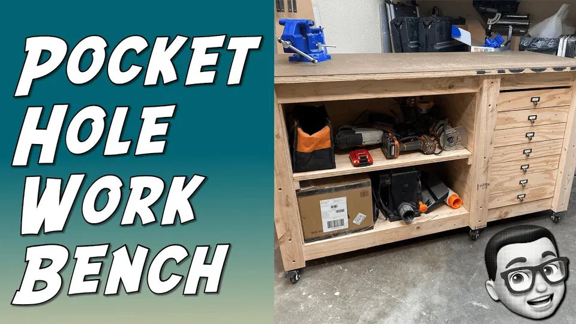
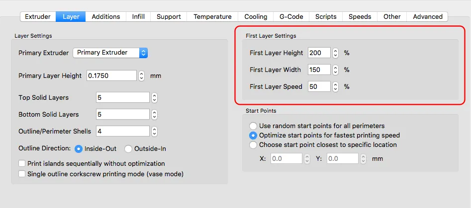
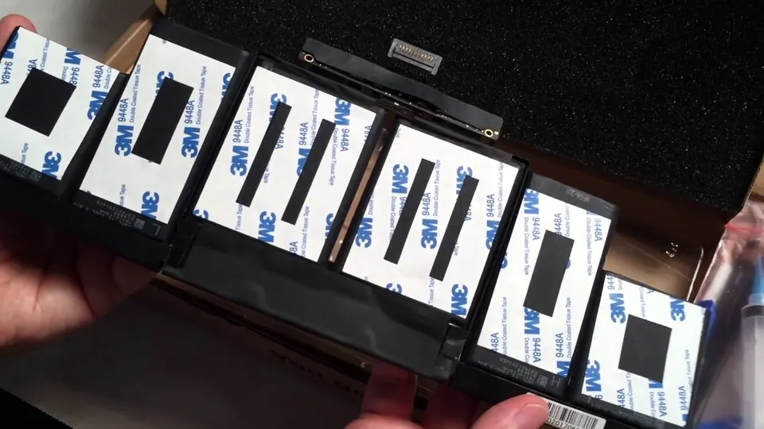
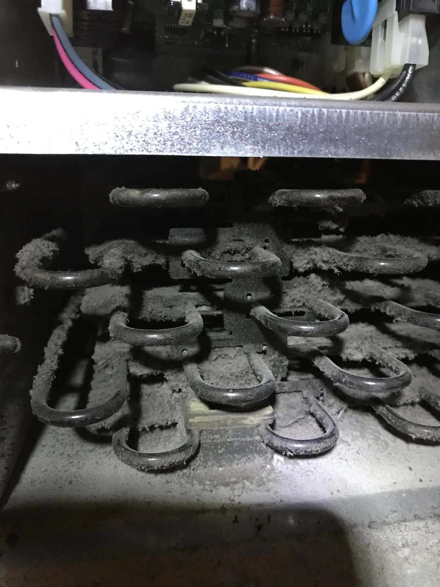
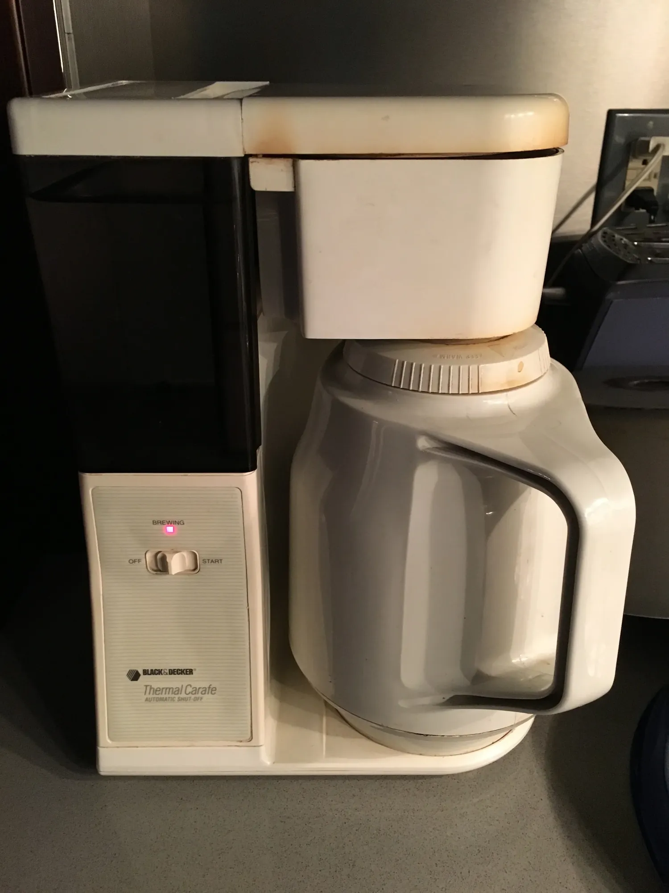
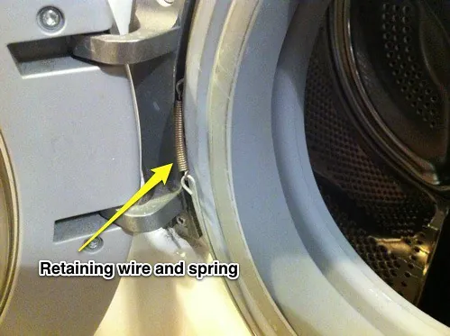
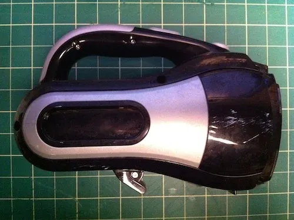

2021
- Best Mini Spot Welder? Review of the Malectrics Mini Spot WelderI reviewed the Malectrics Mini Spot Welder (v3) on my YouTube channel Fed Learns to Make. Compared to other mini spot welders, I found the Malectrics to be much better built…
 Fed Learns To Make Video: Coffee Can Secret Hiding Place Stash!I build a secret stash to hide all my super-valuable stuff out of a Trader Joe's coffee can, 3D printed parts, insulating foam and lots of magnets. No one will suspect that this…
Fed Learns To Make Video: Coffee Can Secret Hiding Place Stash!I build a secret stash to hide all my super-valuable stuff out of a Trader Joe's coffee can, 3D printed parts, insulating foam and lots of magnets. No one will suspect that this…
Fed Learns To Make Video: Compact Workbench with Pocket Hole JoineryI built a compact workbench based off of Steve Ramsey’s BMW design, but using pocket hole joinery and with more drawers. Some of the videos that helped me learn to make: Pocket…
2020
 Fed Learns to Make video: DIY TeleprompterI build a compact DIY Teleprompter that uses an iPhone or Android to display text. Has a built-in camera mount. I provide you with a parts list and a PDF of the plans I used, plus…
Fed Learns to Make video: DIY TeleprompterI build a compact DIY Teleprompter that uses an iPhone or Android to display text. Has a built-in camera mount. I provide you with a parts list and a PDF of the plans I used, plus… Inaugural video of my new YouTube Channel: Fed Learns To MakeThis is the first video of my new YouTube channel called Fed Learns To Make. The idea behind the channel is to follow my journey as I learn to become a maker by watching hundreds…
Inaugural video of my new YouTube Channel: Fed Learns To MakeThis is the first video of my new YouTube channel called Fed Learns To Make. The idea behind the channel is to follow my journey as I learn to become a maker by watching hundreds…- Install both a Raspberry PI Camera and a USB Camera on Octopi 0.17 and 0.18I use Octoprint to manage my Prusa MK3 3D printer. To keep an eye on my prints, I have two cameras hooked up to the Raspberry PI on which I have Octoprint installed. The main…
2019
2018
- Thing added to the verse of ThingiverseToday I added a design to Thingiverse for a camera mount system for 3D printers, based on another design. I did all the redesigning and additions in Tinkercad, which I appreciate…
 Don't use SketchUp for 3D-printed designsSketchUp is great in many ways, especially for creating architectural and construction models. However, while the objects that it creates look solid, many are not. That's not a…
Don't use SketchUp for 3D-printed designsSketchUp is great in many ways, especially for creating architectural and construction models. However, while the objects that it creates look solid, many are not. That's not a…
[UPDATED][DEPRECATED] Simplify3D: Confusing First Layer settingsHas has been pointed out, while this blog post was accurate many years ago, it no longer applies. Simplify3D 4.0 is a powerful 3D mesh slicer program for 3D printing with many…
2017
- Using Regular Expressions to change caseYou can change the case of text with Regular Expressions in some applications and programming languages by placing control strings in the replacement expression indicating the…

Repair Video: MacBook Pro 15, Late 2013 Battery ReplacementFor the last 10 years, or so, along with my friend Flavio I've been recording a popular Spanish-language podcast called Puromac, about all things Apple. We also have a YouTube…
Repair: Bad Electrolytic Capacitor Strikes Again, This Time In A Refrigerator Control UnitMy Kitchen Aid model KBLC36FMS02 built-in refrigerator had been making odd sounds for a few weeks and then one day stopped cooling. I pulled the fridge out of its niche and…
2016
- Jasmine unit testing: Don't forget to callThrough()One of the great things about Jasmine, the Javascript unit testing library, is the spy. A spy lets you peek into the workings of the methods of Javascript objects. Just don't…
- Programming Basics: Names matterThe names developers use for identifiers in their code is essential for readability, maintainability and is one of the indicators of a competent software developer. Combined with…

Repair: 30 year-old coffee makerAbout 15 years ago, I inherited a vintage Black and Decker thermal carafe drip coffee maker, model TCM-411 from the 80's. It was given to me in payment for helping ready an…
2015
- To Drobo or not to DroboStandard RAID systems require from some to a lot of management which I don't want to do. Drobos have very low maintenance needs. Drobos accept drives of varying capacity and…
- Sophomoric but funJust a short post to let the world (anyone who cares, really) that I created a new satirical site called "ILoveCaulk.com". Why did I spend time creating something as dumb as…
2014

2013
- Hiding XML in script tagsA few years ago I created a simple Paypal form generation system for my wife, who runs her own business; a wellness travel company called Pravassa. The original version of the…
 Making Steel Cut Oatmeal in the MicrowaveI never knew that I liked oatmeal until I tried the steel cut variety based on a recommendation from famed nerd-chef Alton Brown. For years I had only been exposed to rolled…
Making Steel Cut Oatmeal in the MicrowaveI never knew that I liked oatmeal until I tried the steel cut variety based on a recommendation from famed nerd-chef Alton Brown. For years I had only been exposed to rolled…
2012
- Repairing Omron and Alps buttonsRecently I had occasion to repair a Logitech wireless mouse and the keyboard of an antique from the 80's, an Apple IIc. Both devices use mechanical switches which can be opened…
- Practical uses for the modulo operatorI was introduced to the modulo operator in my first real programming job (longer ago than I care to admit). The problem I had was that I needed to generate a calendar as a simple…
- HTML script tags can not be atomic/self-closingRecently I completed a project where I converted an Actionscript form generation system I wrote for my wife's business into Javascript. I've been writing Javascript on and off…
 Add a stereo jack to Sennheiser RS-120 Wireless HeadphonesBefore After This is a simple project that I did over a couple of hours one Saturday. I decided to make a blog entry about it because I think it makes a good project for someone…
Add a stereo jack to Sennheiser RS-120 Wireless HeadphonesBefore After This is a simple project that I did over a couple of hours one Saturday. I decided to make a blog entry about it because I think it makes a good project for someone…
2011
- Nerding it up at The Big Nerd RanchIn 2011, from September 16th through the 23rd, thanks to my employer Grassroots-Technologies, I attend The Big Nerd Ranch to take their "Beginning iOS" class. Here is a…

Bosch Axxis washer "Door Open?" error and repairMy wife and I own a Bosch Axxis front-loading washer and dryer set (WFR 2450/2460 and WTA 4410US). One morning my wife informed me that the washer was not working. It was…- Firefox 4: Destroyer of MemoryI loved my Firefox 3.6, even though it wasn't the best memory citizen nor the fastest browser out there. However, because of its vast number of extensions, it was my preferred…
- Audacity Nyquist Programming: Removing a 60hz humMy friend Flavio and I record a Spanish-language podcast dedicated to Apple products called Puromac. Since he currently lives in Puerto Rico and I'm in New York City, we talk…
2010

Supercharging a Black & Decker CHV1568 15.6-Volt DustBusterBackground: I bought a Black & Decker DustBuster a couple years ago because my wife and I have two dogs and we wanted a convenient way to spot-clean any dog hairs we found. I…- Playing Audio files from Terminal in MacOSXI needed to play an audio file from the command line in MacOSX and didn't know how. In Finder, I'd QuickLook the file using the spacebar and use the arrow keys to move to the next…
- Installing FTP task on Ant 1.8.X on MacOSXI recently had to reinstall the OS on the laptop I use primarily for work. I thought I had installed everything I needed, but realized that I couldn't run the FTP task in Ant…
- Getting it wrong: Troubleshooting mid-2010 Macbook Pro hardware issuesI've been using Macs since 1984 and have gotten pretty good at troubleshooting issues on the platform. From using ConflictCatcher on pre-MacOSX Macs (remember the joy of…
- Search and replace across files using 'grep', 'xargs' and 'sed' in MacOSXI wanted to improve my unix command-line skills and replace a string in a series of files for a work project. My goal was to use a single line to search for files in a directory…
No posts match that filter.